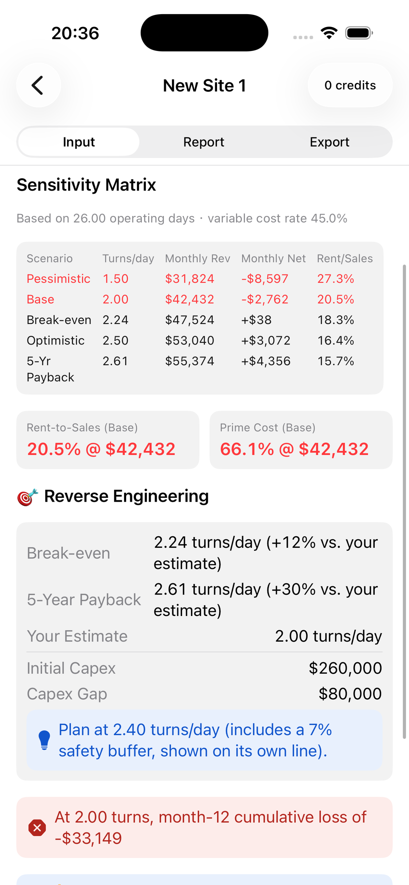
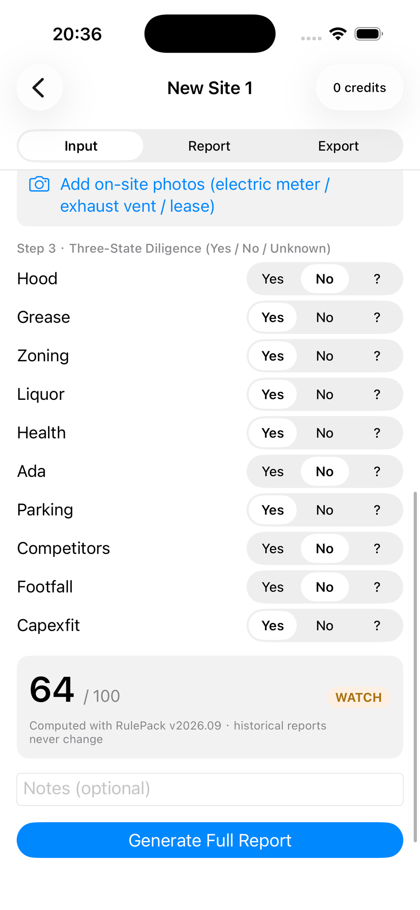
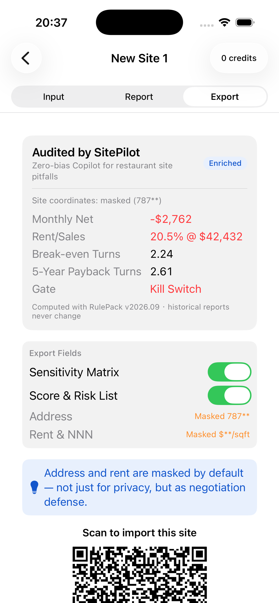

CASE STUDY · PUBLISHED · iOS
SitePilot
Before signing a restaurant lease, know whether the site can work.
I turned an exploratory demand signal into a published US iOS product: a local-first evaluation that gives first-time restaurant founders a recomputable veto before they commit to a lease. This case is about the reasoning behind it — the problem, the scene, the AI boundary, the decisions, and what is still unproven.
THE PRODUCT IN PRACTICE

01 / PROBLEM DEFINITION
The most expensive mistake happens before the lease is signed.
A restaurant lease is a long, hard-to-reverse commitment made with incomplete information. The gap is not a lack of advice; it is the lack of a verdict that can be recomputed and challenged. For first-time founders — many of them immigrants — the sharper pain is not knowing what they do not know: NNN rent, liquor-license timelines, ADA obligations, personal guarantees.
01 · Observe
Demand signal: restaurant-consulting livestreams in China. Exploratory observation, not a quantified audience study. It produced a hypothesis, not proof.
02 · Frame
Three questions before commitment: can this rent be supported, which costs are missing, and what still has to be checked?
03 · Differentiate
A general LLM can sound confident without reproducing the same numbers twice. The wedge is a verdict whose every input can be opened and recomputed.
04 · Constrain
US-first, English, USD / sqft, Austin as the initial rule pack. Not served: legal or financial advice, ADA / zoning / permit verdicts, children under 13, and v1 ghost kitchens.
Evidence added during case preparation · 27 Sep 2026
The National Restaurant Association 2025 operations release reports median pre-tax income of 2.8% of sales for full-service and 4.0% for limited-service restaurants. SBA guidance and Austin permitting sources add cost and diligence context. These are background signals, not universal thresholds and not evidence of willingness to pay.
Read the sources and limits ↗02 / SCENE JUDGMENT
The scene dictated the architecture and the business model.
Site search is a 2–4 week burst, often in basements or unfinished units with weak connectivity, and the decision is irreversible. Those are constraints, not background.
| Scene fact | Product consequence | What it ruled out |
|---|---|---|
| A 2–4 week burst of site visits | Single-use credits and a pack, not a recurring plan | Monthly subscription |
| Weak or no connectivity on site | Core math and the verdict run fully offline on-device | Cloud-dependent evaluation |
| Irreversible, high-cost commitment | Reproducible verdict plus a frozen report snapshot | A score that changes after a rule update |
Who it is for
First-time restaurant founders and site-selection consultants evaluating a shortlisted US site; immigrants navigating unfamiliar local rules.
Who it is not for
Landlords, chain expansion teams, anyone seeking legal / zoning / permit conclusions, or a market-wide traffic dataset.
Thresholds (rent-to-sales, prime cost, the 25% feasibility gate) are product rules calibrated from public benchmarks, not predictions. They require local calibration city by city.
03 / THE AI BOUNDARY
Give the model the smallest possible job.
The AI is a bounded qualitative assistant, not the decision maker. Every number, score and feasibility verdict is computed locally by pure Swift code. The model adds optional wording around a verdict it cannot change.
FORBIDDEN
No financial results, no scores or score adjustments, no legal / permit / zoning conclusions, no change to the feasibility gate. A ±15-point "AI adjustment" proposed in an early review was removed from the specification.
ALLOWED
Six optional whitelisted fields of qualitative assistance. All nullable, all labelled "AI inference — not part of the base score", missing fields shown as "—". User-triggered; never on the critical path.
User-triggered branch → optional AI explanation & wording · gpt-4o-mini via a signed Cloudflare Worker · no financial calculation or scoring
| Guard | Implementation | What it protects |
|---|---|---|
| Output shape | OpenAI Responses API with strict json_schema, 800 max output tokens | Free-form model output |
| Three-layer score ban | Schema excludes numbers; Worker strips forbidden keys; client parser rejects nine score-like keys | Numbers drifting into the model's hands |
| Injection & abuse | Seven-category prompt sanitizer, 4,000-char ceiling, HMAC-signed headers, 60s window, 4,096B body cap | Instruction hijacking and runaway cost |
| Degradation | 5/min and 50/day quotas, kill switch, quota rollback, eight explicit fallbacks; the local report always survives | Trust when the AI is down, slow or empty |
Trade-off: the AI feels less "smart". In exchange, identical inputs always produce the same verdict, and the assistant can be switched off without breaking the product.
04 / KEY DECISIONS
Four decisions, each with a price.
Feasibility before persuasion
A polished negotiation script can keep someone pursuing a weak deal. A feasibility gate computes the rent reduction the assumptions require: ≤10% open, 10–25% caution, >25% blocked. If all three rescue paths fail, the report recommends walking away and withholds the negotiation script.
Rejected alternative: always generate scripts, or present a single score. Verification: GoldenCase pins the three-way failure. Price: 25% is a product rule to calibrate, not a landlord prediction; it can talk a paying user out of a purchase.
Show uncertainty where it enters
Diligence uses Yes / No / Unknown. Only "No" reduces a score; "Unknown" reduces confidence and, above five unknowns, locks the score at insufficient instead of inventing a reassuring number. A sensitivity matrix shows five scenarios with their own rent-to-sales and prime cost.
Rejected alternative: treat missing inputs as zero or publish one composite score. Verification: unit tests cover the Unknown paths. Price: some users get no score at all — an incomplete experience that is honest.
Local kernel, minimal AI permission
Financial results, scoring, gating and scripts are deterministic local code. The LLM receives only a derived business summary on request and returns six optional qualitative fields that never enter the base score.
Rejected alternative: let the model score, or apply an AI adjustment to the total. Verification: three independent layers reject score keys. Price: the product is less "AI-native" to demo, and several hundred lines of guard code exist to protect a small feature.
Verify purchases locally — and overturn a code review
A review recommended server-side confirmation before granting entitlements, and a third-party SDK. I shipped StoreKit 2 JWS verification on-device: grant entitlement first, then sync the ledger in the background, with a persistent retry queue and self-implemented Apple Server Notification v2 signature checks for refunds.
Rejected alternative: gate value on a network round-trip, or add RevenueCat. Verification: 143 Swift tests; a real purchase-to-refund drill is still open. Price: a residual refund-window risk and signature code I own forever.


A decision users can inspect
In this development example, the base scenario shows a monthly loss of $2,762 and rent-to-sales of 20.5% at $42,432 revenue. Pairing the ratio with its revenue assumption makes the result interpretable. It is a worked example, not a forecast for a real restaurant.
Unedited simulator captures · 13 Sep 2026. They illustrate the workflow, not the latest review build. Open either image for full detail.
05 / SYSTEM DESIGN
Make the product promise an architectural constraint.
Optional branch → signed Worker → LLM wording → nullable AI fields · never feeds back into the verdict
Reproducible calculations
Swift computes money in integer cents with explicit round-then-propagate rules, so displayed numbers can feed later calculations. A negative month yields "never pays back" rather than infinity or zero.
Stable historical reports
A saved report freezes derived values and its rule version. Current / Previous rule-pack snapshots with force-replace rollback mean a bad pack cannot be archived, and an old report keeps its original conclusion.
Bounded cloud surface
Only the optional AI call and purchase ledger leave the device; the request carries derived metrics, not the address, photos or verdict. HMAC signing, quota ledger and refund handling live in the Worker.
Shipped in v1: one built-in rule pack (US-TX-Austin v2026.09, weights 40 / 35 / 25), snapshot isolation and the offline kernel. Not implemented in this release: Google Places / FSA / Census data, DeviceCheck or App Attest, provider switching, and metro-wide rule packs. Roadmap items, not shipped capabilities.
06 / COMMERCIAL & COMPLIANCE
A successful purchase should still feel successful when the ledger fails.
App review exposed a mismatch: a purchase could succeed and grant access while a secondary ledger-sync failure still surfaced as an error. To the customer, the difference between payment and bookkeeping is invisible.
I separated the responsibilities. StoreKit verification anchors local entitlement delivery; the Worker records the transaction afterwards. Ledger failures became silent with a persistent retry queue, and transaction updates reuse the local fulfillment path.
The lesson: failure handling is part of the paid product experience. It must reflect whether the user received value.
RESPONSIBILITY SPLIT
Verified purchase
↓ Local entitlement first
↓ Background ledger sync
On failure → queue & retry silently
Real refund-notification testing remained open at handoff.
Six rounds of App Store review, read as product feedback
| Review theme | What broke in the reviewer's hands | Product lesson applied |
|---|---|---|
| Metadata & pricing | Old $9.99 / $29.99 price copy survived in submission text | De-price product IDs; regenerate all public metadata together |
| Purchase experience | Ledger error shown after a successful payment | Entitlement first, silent retry, one fulfillment path |
| Review sandbox | IAP could not be located; the app shipped US-only | Make IAP reachable to reviewers; state the shipped market explicitly |
Pricing design: $6.99 single / $19.99 five-pack / $79.99 annual; no monthly plan, no free trial; the core verdict and rejection reports stay free. "Unlimited" annual AI was justified by a documented cost estimate (~$0.0015 per call, ~$0.30 per heavy user per year) — an estimate, not measured spend.
Outcome: released 5 Nov 2026 on the US App Store, v1.0, after six rounds of review correspondence (last documented rejection 19 Oct 2026). The exact approval resolution is not documented here. Open at handoff: an end-to-end refund notification with a real Apple Server Notification, a sandbox purchase-to-refund drill, and dual-environment ASC URLs.
07 / VERIFICATION
What has actually been verified?
Engineering validation, product-hypothesis validation and market validation are three different things. Only the first has hard evidence so far.
| Layer | Evidence available | What it does NOT prove |
|---|---|---|
| Engineering | 143 Swift tests / 0 failures; 38 Worker checks / 0 failures; GoldenCase pins the worked example; 2 UI walkthrough tests (~69s, 19 captures); security and IAP reviews; 13-item pre-submission checklist | That anyone wants this, or that the thresholds fit their city |
| Product hypothesis | Deterministic kernel, three-state diligence, frozen snapshots and eight fallbacks are implemented and testable | That founders understand Unknown, accept a blocked verdict, or value the paid AI fields |
| Market | App Store release 5 Nov 2026; no download, revenue, rating or retention data yet | Product-market fit. Nothing on this page is a growth result |
Worked example pinned by GoldenCase, not a forecast: $42,432 revenue, −$2,762 monthly result, 20.5% rent-to-sales, 2.24 turns to break even, 51.1% reduction required — which triggers the blocked verdict. Engineering counts are engineering validation, not outcomes.
Metrics to collect next
Unknown rate and score-lock frequency; AI-field adoption and regeneration; behaviour after a blocked verdict; $6.99 conversion, refunds and retention; threshold recalibration by city. Each needs a pre-declared bar before a number is called a success.
How I would read them
If users never resolve Unknowns, the diligence UI is too expensive. If paid fields are ignored, remove the tier instead of marketing it harder. If a veto is routinely overridden, the rule — not the user — needs recalibration.
08 / STATUS & REVIEW
Published is a delivery fact, not a market conclusion.
| Released | 5 Nov 2026 · public App Store lookup, checked 10 Nov 2026 |
|---|---|
| Market / language | United States · English · USD / sqft |
| Version / Apple ID | 1.0 · 6811473992 |
| Data window | Newest Sales & Trends daily report: 30 Oct 2026 — it predates the release |
| Store link | apps.apple.com/us/app/sitepilot-restaurant-lease/id6811473992 ↗ |
Delivered
Offline kernel, feasibility gate, three-state diligence, frozen snapshots, bounded AI with signed Worker, purchase verification, legal pages and a published US App Store build.
Still unproven
US demand, willingness to pay, and whether the verdict changes real decisions. No download, revenue, rating, retention or interview evidence exists yet; thresholds need local calibration.
Next validation
Observe whether founders can restate key assumptions, name a useful diligence question, and understand the paid enhancement. Revise onboarding, rules and pricing before claiming fit.
LIVE APP STORE DATA
—
No download signal yet: the newest Sales & Trends daily report predates the 5 Nov release. A zero or dash here is a data-window fact, not a product result — and no ratio is published because the two counters cover different windows.
09 / SOURCES & EVIDENCE BOUNDARIES
Research sources & evidence boundaries
Desk research was supplemented on 27 Sep 2026 while preparing this case. The original demand signal comes from livestream observation. No quantified livestream growth, US interviews, revenue, or customer savings are claimed.
- National Restaurant Association · 2025 operational realities ↗
- SBA · Choosing a business location ↗
- Austin Public Health · Fixed food establishments ↗
- Placer.ai · Restaurant location analytics ↗
- National Restaurant Association · Occupancy data is not a standard ↗
Material, basis and boundary
| Material | Basis | Boundary |
|---|---|---|
| Market figures | National Restaurant Association 2025 operations release; SBA; Austin Public Health | Background context, not demand evidence |
| Release facts | Public App Store lookup baked into the site's weekly metrics snapshot | US storefront only; checked 10 Nov 2026 |
| Engineering counts & screens | Project test suites and reviews dated 25 Sep 2026; simulator captures 13 Sep 2026 | Engineering validation and an earlier build, not the shipping build |
Internal evidence: product specification, phase 3–4 decision records, Worker deployment checklist, IAP repair review and App Store submission metadata. This case does not claim Google Places / FSA / Census data, DeviceCheck, provider switching, or verified real-world decision improvement.
Numbers on this page are labelled by kind: worked example, engineering validation, documented estimate, or release fact. Thresholds require local calibration. Nothing here is legal or financial advice, and publication itself is not presented as product-market fit.